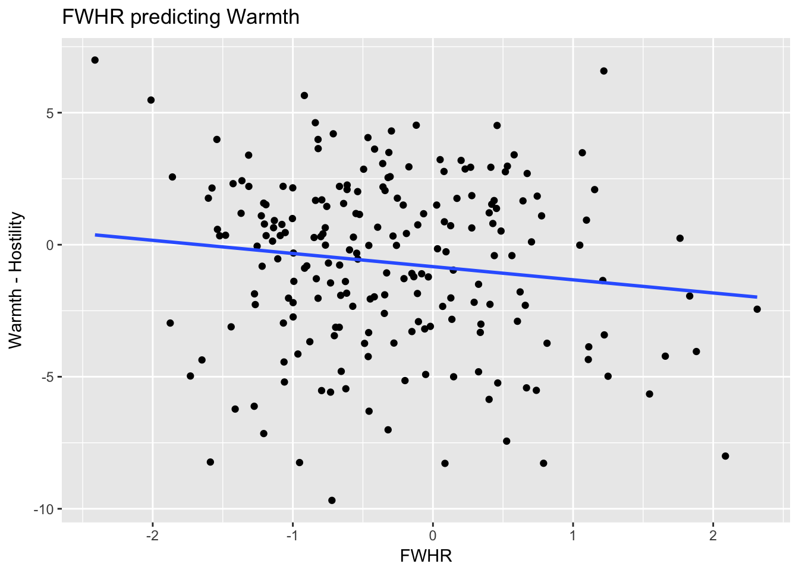

11 Free Assignment 6: Moderation with R
This assignment covers moderation and will use the following skills:
- How to conduct a multiple regression with control variables
- How to examine a dichotomous interaction in R
- How to interpret an interaction, using plots and by using simple effects analysis.
In this assignment, we are going to investigate the relationship between Facial Width-to-Height Ratio (FWHR) predicts personality traits in children before puberty and adolescents. Research shows that FWHR is correlated with aggressive and leadership traits in adult males, ostensibly because it is correlated with the amount of testosterone a male has in his body. During puberty, testosterone helps to cause additional growth to a boy’s jaw. Higher levels of testosterone lead to wider faces or higher FWHR.
Higher levels of testosterone also lead to more aggressive behavior and dominant. Men with higher FWHR are more likely to be more aggressive in sports but also more likely to succeed in some businesses.
In this study, we are going to investigate a few hypotheses. We have a dataset that has measurements of the personality of children before puberty (age 9-10) and after puberty (age 17). The researchers have the following theories:
- Childhood FWHR should not be associated with personality for both boys and girls
- Adolescent FWHR should be associated with personality, but only for boys.
- These associations should be strongest for personality traits that are related to dominance and aggression.
When completing this assignment, make sure you create a script file which contains the commands you used.
Step 1: Load the tidyverse package.
Step 2: Load the csv file named FA6_moderation.csv into your R workspace. Give it whatever name you want, though I will call mine d.
Check to make sure your data are loaded correctly. You should have 235 observations of 12 variables. The variable names are as follows:
ID: Face ID AGE: age group: ADOL for adolescents, CHILD for children CONFIDNT: a measure of how conifdent a person is ASSERTIV: a measure of a person’s assertiveness COGNITIV: a measure of a person’s openeness to learning and new ideas OUTGOING: a measure of a person’s willingness to be outgoing or extraverted DEPENDBL: a measure of how dependendable or conscientious a person is WARMHSTL: a measure of a person’s interpersonal warmth or a tendency to be hostile. SEX: a person’s sex, M for males and F for females ATTRACT: a measure of a person’s attractiveness BABYFACE: a measure of how babyfaced a person is FWHR: a z-score measure of a person’s FWHR relative to those of the same age.
Question 1: The researchers think that WARMHSTL is the personality variable most likely to be associated with FWHR. Do you see any other variables that may be associated with FWHR? Pick one other personality variable that you think could be associated with FWHR and write them down. We will use that variable later.
Step 3: Since many of our hypotheses involve examining the data separately for children and adolescents, make two separate datasets, one for only children (where AGE equals CHILD) and one for only adolescents (where AGE equals ADOL).
Step 4: Using ggplot, create a scatterplot examining the relationship with FWHR predicting WARMHSTL. Use some options to make the plot look nice and make sure to include a line of best fit. Your plot should look like the following:

It looks like there might not be a relationship between FWHR and Warmth-Hostiity. This may be because we are looking at all the faces, when we want to see whether there is a difference between the children and the adolescents.
Step 5: Use the same plot as you did for Step 4 but use the color = AGE option to divide the points for children versus adolescents.
ggplot(data = d, aes(x = FWHR, y = WARMHSTL, color = AGE)) +
geom_point() + geom_smooth(method = 'lm', se = F) +
labs(x = "FWHR", y = "Warmth - Hostility", title = "FWHR predicting Warmth")Question 2: Does it look like there might be an interaction between FWHR and AGE, based on your plot?
Step 6: Use the lm() command to conduct a regression analysis looking at the relationship between FWHR and WARMHSTL with AGE as a moderating variable.
Question 3: Is there an interaction between WARMHSTL and AGE? What is the significance of the interaction?
Step 7: Repeat Steps 4-6 using the other variable you chose in Question 1 as a dependent variable which you thought may also be related to FWHR.
Question 4: What are the results of your analysis in Step 7? Did you find an interaction?
Now we want to look at adolescents, separately, because we think that the relationship between personality and FWHR will be strongest for adolescents, specifically males
Step 8: Conduct a regression analysis using only the data frame containing adolescents. Use FWHR as a predictor and SEX as a moderator predicting WARMHSTL.
Question 5: What are the results of your moderation analysis in Step 8? Does SEX significantly moderate the relationship between WARMHSTL and FWHR?
Step 9: Create a plot visualizing your interaction from Step 8.
Question 6: Use the plot from Step 9 to explain what is happening to cause the interaction (or lack of a significant interaction). Does this support the researchers’ hypothesis?
Step 10 Create separate simple regressions to break down the interaction in Step 8 separately for female and male faces. These interactions should have FWHR predicting WARMHSTL for adolescent female faces and adolescent male faces separately.
Question 7: Do the simple regressions help to explain the interaction in the moderation anlysis? Do they support the researcher’s hypothesis?
Step 11 Use another variable as a dependent varible and conduct another regression analysis with either AGE or SEX as a moderator. If you choose SEX as your moderator, you can do this either for the children data frame or the adolescent data frame. Create a plot of your interaction as well.
Question 8: What did you analyze in Step 11? What were your results?